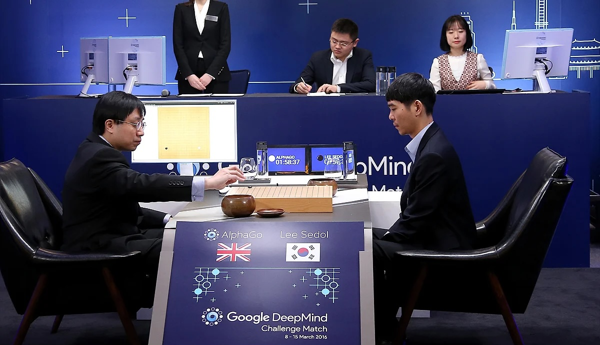
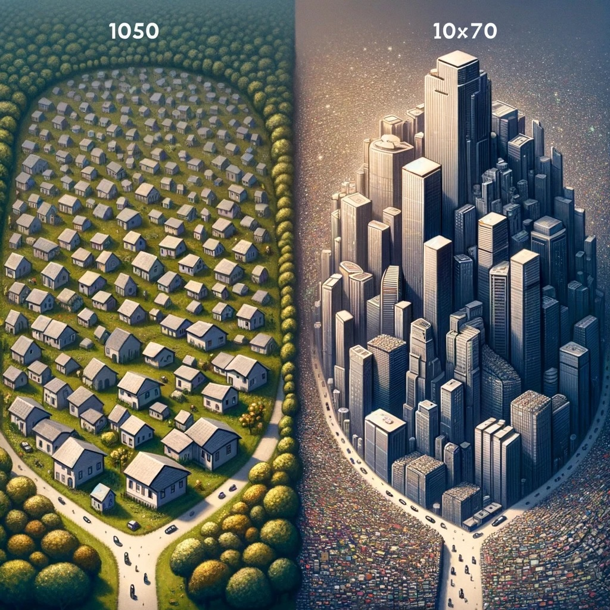

AlphaGo - Creative Approach to Winning in an Ancient Game of Go
I have recently watched an award-winning documentary called AlphaGo. It follows a team of Google’s DeepMind engineers who built a system to compete in an ancient game of Go. The documentary follows the DeepMind team as their AI model competes against, at the time, world Go champion - Lee Sedol.

Five games were played with AlphaGo coming out victorious in four out of five matches - a shocking and rather upset result for the huge Go community.
The documentary left me with a range of emotions varying from amazement and excitement to sadness and anxiety. Moreover, it left me with three questions that kept bugging me:
- What is creativity?
- Is Alpha go creative?
- How do I feel about world’s best player losing to an AI model and how might this impact my hobbies and line of work in the future?
In this post I am going to explore these questions in some depth. I understand that whatever answers I will come up with, will be highly subjective, but it doesn’t mean I shouldn’t seek these answers. Let’s dive in.
## Why Go?
Many of us have heard of a game called Chess, so let’s start by comparing Chess to Go. A game of Chess has a smaller board and multiple distinct pieces with different mechanics and rules surrounding them. Go, on other hand, has a much larger board, only one distinct piece per sice playing but a significantly higher number of possible moves.
| Chess | Go | |
|---|---|---|
| Board Size | 8x8 | 19x19 |
| Distinct pieces | 6 | 2 |
| Approximation of moves | 10^50 | 10^170 |
Figure 1: Comparison of Chess to Go
Let’s focus on the important part - possible number of moves and try visualising this difference.
 Figure 2: Comparison of Chess and Go through village and megapolis
Posts
subscribe via RSS